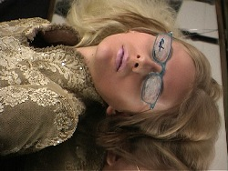

Free Screening: Bernadette Corporation, Lynn Hershman Leeson, Les Levine
Free screening of three artists’ films this Friday at 6 pm at Hans Goodrich
Bernadette Corporation
Hell Frozen Over, 2000
Lynn Hershman Leeson
25 Windows, A Portrait/Project for Bonwit Teller, 1976
Les Levine
Made in New York, 1984
Each of the three films is representative of the entanglement of the world of art and fashion.